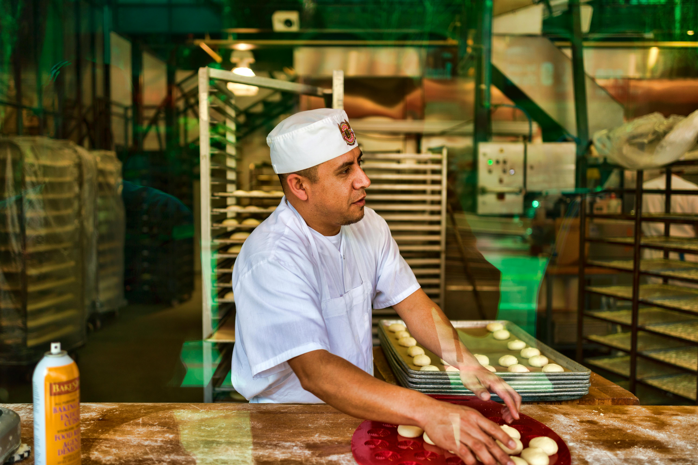

La Exquisita Tradición Francesa en las Calles de Argentina: Retrato de un Pastelero Apasionado
En una tranquila calle de Buenos Aires, se encuentra una pequeña pastelería que destaca entre el bullicio de la ciudad. En este rincón acogedor, los aromas de mantequilla, azúcar y especias se entrelazan en el aire, tentando a los transeúntes con sus deliciosos encantos. Aquí reside Pierre, un talentoso pastelero francés que ha traído consigo la exquisita tradición de la repostería francesa a las calles de Argentina.

Con su impecable técnica y su pasión por los sabores auténticos, Pierre ha conquistado los corazones de los porteños con sus creaciones pasteleras. Desde eclairs de chocolate hasta croissants recién horneados, cada bocado es un tributo a la maestría y el cuidado artesanal que define la pastelería francesa.
Pero más allá de su destreza culinaria, Pierre ha logrado algo aún más preciado: ha tejido lazos de amistad y comunidad en su nuevo hogar. Con su cálida sonrisa y su hospitalidad inigualable, ha creado un espacio donde los clientes se convierten en amigos y cada visita se convierte en una experiencia memorable.
Aunque su viaje comenzó en las calles empedradas de París, Pierre ha encontrado su verdadero hogar en Argentina. Aquí, entre los aromas de café y las risas de los comensales, continúa compartiendo su amor por la pastelería francesa, llevando consigo un pedacito de su tierra natal a cada creación que sale de su horno.
En la encrucijada entre dos culturas culinarias, Pierre ha encontrado su propia voz, creando un legado que perdurará mucho más allá de las fronteras geográficas. Su historia es un recordatorio de que la pasión y el talento trascienden los límites del tiempo y el espacio, y que, a veces, el mejor viaje es aquel que nos lleva de regreso a casa, donde sea que esté.